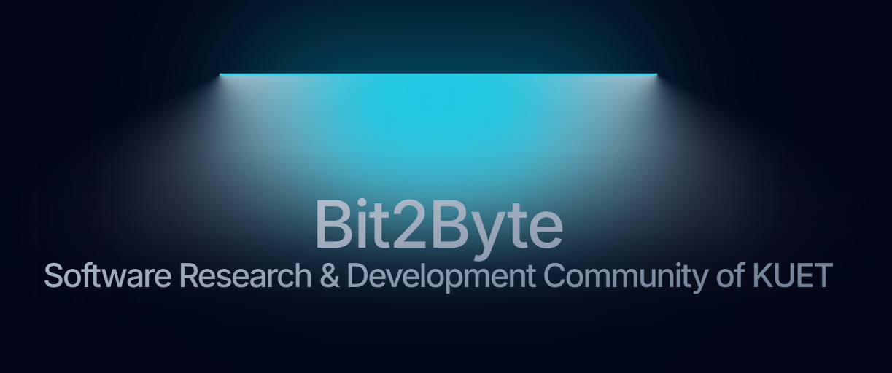

Welcome Message
Bit2Byte is open to KUET students who want to learn software development, explore research ideas, and contribute to a vibrant technical community.
KUET
Software Research & Development Community
Bit2Byte is the Software Research & Development Community of KUET. We bring students together through coding sessions, technical discussions, project collaboration, and skill-building activities throughout the year.

Bit2Byte is open to KUET students who want to learn software development, explore research ideas, and contribute to a vibrant technical community.
Explore the club pages below: